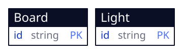
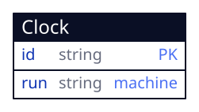

Counter (/)

One seeded tab row; a click wakes count, which tells the buttons apart by element id.
Five tab entities and one device entity, read and written by four screens in one browser tab.
A tab entity and the handlers only it reaches are machine-checked and owe this document nothing; the device one does.
| 1 | id | uuid | pk | |
| 2 | title | string | this.size() >= 1 && this.size() <= 80 | |
| 3 | done | string | this in ['no', 'yes'] | |
| 4 | created | timestamp |
the first column is the field's ordinal, which a diff keys on · pk primary key · → references · ◇ unique · ≡ indexed · ○ nullable · a rule or default in the last column
created_by, updated_by → app_user, stamped by the platform on every write; not the author’s.
A task, kept in this browser across reloads. The key is minted by the create form; nothing else invents one.
| Field | Type | Constraint |
|---|---|---|
| id | uuid | |
| title | string | this.size() >= 1 && this.size() <= 80 |
| done | string | this in ['no', 'yes'] |
| created | timestamp |
One seeded tab row; a click wakes count, which tells the buttons apart by element id.
A create form mints the key and stamps {now}; a form inside an item updates that item; a click deletes by the row's key.

press writes five lights and the move count; tally folds the lit count and writes it only when it changed.

A machine owns run and re-arms after each second; roll asks the terminal for a draw.
Escape hatches: none. No container, WASM unit, vendored component or external endpoint; every line of app code is a handler the terminal runs in a compartment.